专题01 期末复习易错题67个考点
【北师大版2024】

【考点1 认识立体图形与平面图形】 2
【考点2 几何体的展开图】 3
【考点3 从不同方向看几何体】 3
【考点4 点、线、面、体】 4
【考点5 截一个几何体】 5
【考点6 正方体的展开图】 6
【考点7 正数和负数】 6
【考点8 有理数的概念】 7
【考点9 数轴】 8
【考点10 相反数】 8
【考点11 绝对值】 8
【考点12 绝对值的非负性】 9
【考点13 有理数的大小比较】 9
【考点14 有理数的加法】 9
【考点15 有理数的减法】 10
【考点16 有理数的加减混合运算】 11
【考点17 有理数的乘法】 11
【考点18 倒数】 11
【考点19 有理数的除法】 12
【考点20 有理数的乘方】 12
【考点21 偶次方的非负性】 13
【考点22 有理数的混合运算】 13
【考点23 科学记数法—表示较大点的数】 14
【考点24 近似数】 14
【考点25 代数式的相关概念】 14
【考点26 列代数式】 15
【考点27 代数式的值】 16
【考点28 单项式】 16
【考点29 多项式】 17
【考点30 整式】 17
【考点31 同类项】 18
【考点32 合并同类项】 18
【考点33 去括号与添括号】 18
【考点34 整式的加减】 18
【考点35 整式的加减—化简求值】 19
【考点36 整式加减的应用】 19
【考点37 直线、射线、线段】 20
【考点38 两点确定一条直线】 21
【考点39 尺规作线段】 21
【考点40 两点之间线段最短】 22
【考点41 两点间的距离】 23
【考点42 线段的和差】 23
【考点43 比较线段的长短】 24
【考点44 角的概念】 25
【考点45 钟面角】 26
【考点46 方向角】 27
【考点47 度分秒的换算】 27
【考点48 角平分线的定义】 28
【考点49 角的大小比较】 28
【考点50 角的计算】 29
【考点51 多边形和圆的初步认识】 30
【考点52 方程的定义】 31
【考点53 方程的解】 31
【考点54 一元一次方程的定义】 31
【考点55 等式的性质】 32
【考点56 解一元一次方程】 32
【考点57 一元一次方程的解】 32
【考点58 由实际问题抽象出一元一次方程】 33
【考点59 一元一次方程的应用】 33
【考点60 定量数据与定性数据】 34
【考点61 普查与抽样调查】 35
【考点62 总体、个体、样本、样本容量】 36
【考点63 统计表】 36
【考点64 条形统计图】 37
【考点65 扇形统计图】 39
【考点66 折线统计图】 40
【考点67 频数直方图】 41

【考点1 认识立体图形与平面图形】
1．（25-26七年级上·甘肃兰州·期中）下列说法不正确的是（ ）
A．棱柱的上下底面是完全相同的图形
B．五棱柱有5个面、5条棱
C．圆锥的底面是圆
D．长方体与正方体都有六个面
2．用n个棱长为1的小正方体组成一个棱长为3的大正方体，则n为（ ）
A．3 B．6 C．9 D．27
3．在下列所给的几何图形中，属于平面图形的是（ ）．
A．三棱柱 B．圆 C．圆锥 D．长方体
【考点2 几何体的展开图】
1．（25-26七年级上·陕西咸阳·期中）下面图中，_________是三棱柱的展开图．（ ）
A． B．
B． C． D．
C． D．
2．图中的长方体展开图来自选项中的哪个长方体（ ）

A．
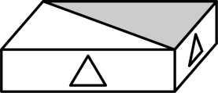
B．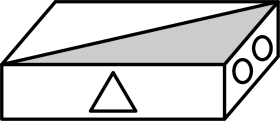
C．
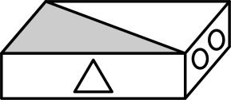
D．
3．（24-25七年级上·陕西安康·阶段练习）下列平面图形能折叠成圆柱的是（ ）
A． B．
B．
C． D．
【考点3 从不同方向看几何体】
1．（25-26七年级上·广东·期末）篆刻是中华传统艺术之一、如图是一块雕刻印章的材料，从正面看这个印章，得到的平面图形是（ ）
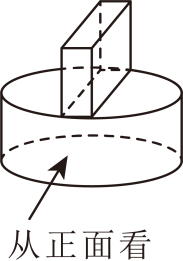
A． B．
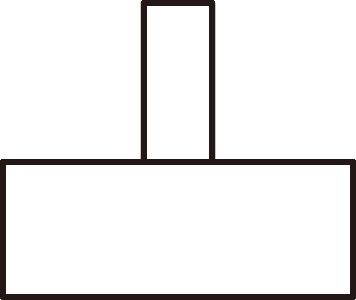
C． D．
D．
2．（25-26七年级上·内蒙古包头·期中）某几何体看到的图形如图所示，则该几何体为（ ）
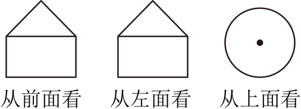
A．
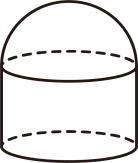
B．
C．
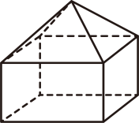
D．
3．（25-26七年级上·四川成都·期中）小颖将几盒粉笔整齐地摞在讲台桌上，同学们发现从正面、左面、上面三个方向看到的粉笔形状如图所示，那么这摞粉笔一共有 盒．
【考点4 点、线、面、体】
1．（25-26七年级上·山东枣庄·月考）生活中有如下现象：
①用钢笔写字；②银行大堂的旋转门旋转一周；③黑板擦在黑板上擦出一片干净区域；④抛出一块石子，石子在空中飞行的路线；⑤硬币立在桌面上旋转一周；⑥车轮上的钢条绕轴转动．
其中能说明“点动成线”的有 ；能说明“线动成面”的有 ；能说明“面动成体”的有 ．（均填序号）
2．（25-26七年级上·广东深圳·期中）将下列平面图形绕轴旋转一周，可得到图中所示的立体图形的是（ ）
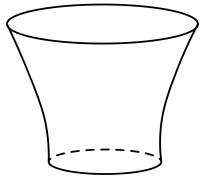
A． B．
B．
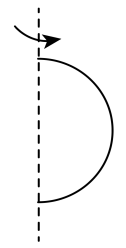
C． D．
D．
3．（25-26七年级上·河北保定·阶段练习）如图是一张长方形纸片，长方形的长为8cm，宽为4cm，若将此长方形纸片绕它的一边所在直线旋转一周，形成的几何体是 ，该几何体的体积是 (结果保留π)

【考点5 截一个几何体】
1．（25-26七年级上·陕西咸阳·期中）用一个平面去截如图所示的正方体，得到的截面形状不可能是（ ）

A．三角形 B．正方形 C．长方形 D．圆形
2．（25-26六年级上·山东淄博·期中）用一个平面去截一个几何体，截面形状可以有圆、长方形，这个几何体可能是 ．
3．（25-26六年级上·山东威海·期中）如图，一个正方体截去一个角后，剩下的几何体面的个数记为f，棱的条数记为c，顶点数记为v，则c+v−f为（ ）

A．12 B．14 C．16 D．18
【考点6 正方体的展开图】
1．（25-26七年级上·广东清远·月考）下列平面图形中不能围成正方体的是（ ）
A． B．
C． D．
2．（25-26七年级上·山西运城·期中）如图，这是一个正方体的展开图，每个面上都标有一个有理数，且相对的面上的有理数互为相反数，则x+y−z= ．

3．（25-26七年级上·山东青岛·月考）小明用纸（如图）折成一个正方体盒子，里面装入礼物，与其他三个大小一样的正方体空盒子混在一起，根据观察，礼物所在的盒子是（ ）
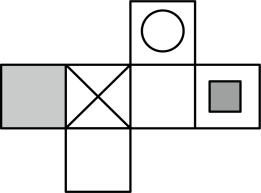
A． B．
B．
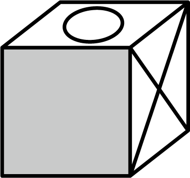
C． D．
D．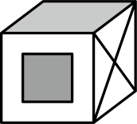
【考点7 正数和负数】
1．（25-26七年级上·陕西西安·期中）若GDP同比“减少2%”记为−2%，那么“增长12.5%”可以记为（ ）
A．+12.5% B．−12.5% C．+10.5% D．−10.5%
2．（25-26七年级上·山东·阶段练习）我国是较早认识负数的国家，金元时期数学家李冶创造了在数字上画斜杠表示负数的方法（如图①）．按照这样的规则，如图②所示的数是 ．
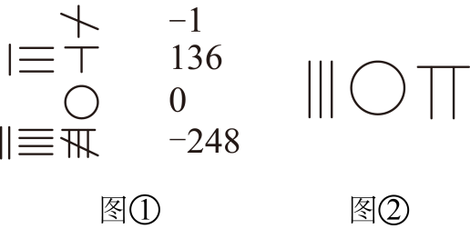
3．（25-26七年级上·江苏常州·期中）在−2，−2，−23，−−2，−22这五个数中，负数有（ ）
A．2个 B．3个 C．4个 D．5个
4．（25-26七年级上·陕西西安·期中）“大唐诗人”主题盲盒受到年轻消费者青睐．某商店购进一批盲盒，每个盲盒进价为30元．为测试市场反应，前五天试行浮动定价，以40元为标准价，超出部分记为正，不足部分记为负．销售记录如下表：
日期 | 第1天 | 第2天 | 第3天 | 第4天 | 第5天 |
售价相对于标准价（元） | +2 | −3 | +4 | −1 | +6 |
售出数量（个） | 25 | 40 | 15 | 30 | 10 |
(1)这五天中，单个盲盒最高售价是多少元？最高售价比最低售价多多少元？
(2)求前五天该店出售这批盲盒的总利润．
【考点8 有理数的概念】
1．（25-26七年级上·广西桂林·期中）下列说法：①0既不是正数也不是负数；②整数包括正整数和负整数；③正数和负数统称有理数；④0是最小的整数；⑤负分数是有理数．其中正确的有（ ）
A．1个 B．2个 C．3个 D．5个
2．（25-26七年级上·福建福州·期中）在−8，2020，327，0，−5，+π，14，−6.9中，非负整数有m个，正有理数有n个，则m+n的值为（ ）
A．3 B．4 C．5 D．6
3．（25-26七年级上·湖北武汉·阶段练习）把下列各数的序号填在相应的大括号里：
①0；②3.1415926；③200%；④−2020；⑤−6.1·43·；⑥π；⑦−227；⑧−−3．
整数：{____________ }；
分数：{____________ }；
非负整数：{____________ }；
正有理数：{____________ }．
4．（25-26六年级上·山东泰安·期中）已知有理数a，b，c满足：a到原点的距离是4，b是最小的正整数，c=2且c<a，则a−b+c的可能值有几个（ ）
A．1 B．2 C．3 D．4
【考点9 数轴】
1．如图，将刻度尺放在数轴上，让3cm和5cm刻度线分别与数轴上表示2和4的两点重合对齐，则数轴上与0cm刻度线对齐的点表示的数为（ ）
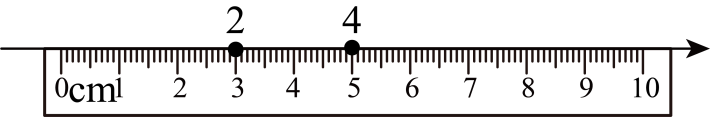
A．−2 B．−1 C．0 D．1
2．（25-26七年级上·吉林长春·月考）点A在数轴上距原点5个单位长度，将点A先向右移动3个单位长度，再向左移动7个单位长度，得到点B，则点B表示的数是（ ）
A．1或−9 B．−1或9 C．1或9 D．−1或−9
3．（25-26七年级上·河南洛阳·期中）有理数a、b在数轴上的对应点如图所示，

则下列式子：①b<0<a；②b<a；③ab>0；④a−b>a+b，其中正确的是（ ）
A．①② B．①④ C．②③ D．③④
4．（25-26七年级上·安徽芜湖·期中）正六边形ABCDEF在数轴上的位置如图所示，点A和F对应的数分别为1和0，若正六边形ABCDEF绕顶点逆时针方向在数轴上向左连续翻转，翻转1次后，点E所对应的数为−1．按此规律继续翻转下去，数轴上−2025所对应的顶点是（ ）

A．A B．B C．C D．D
【考点10 相反数】
1．（25-26七年级上·广西钦州·期中）−7的相反数是 ．
2．（25-26七年级上·河南新乡·期中）−−+7= ．
3．（25-26七年级上·湖南岳阳·期中）若m+1与−6互为相反数，则m的值为 ．
4．已知a、b互为相反数，那么a−5+b= ．
【考点11 绝对值】
1．（25-26七年级上·山东济宁·期中）绝对值是4的数有 ．
2．（25-26七年级上·黑龙江哈尔滨·月考）−4+4= ．
3．（25-26七年级上·黑龙江七台河·期中）若a<1，3−a−a−1的化简结果为 ．
4．计算x−1+x+2的最小值为（ ）
A．0 B．1 C．2 D．3
【考点12 绝对值的非负性】
1．若a−1与b+2互为相反数，则a+b−12的值为 ．
2．（25-26七年级上·广东茂名·期中）若a是任意的有理数，则式子2025−a−2025的最大值是 ．
3．（25-26七年级上·福建福州·期中）若a、b为整数，且a−2+a−b=1，则a+b的值有（ ）种可能的结果．
A．1 B．2 C．3 D．4
4．a，b，c满足等式a+12=1−c,b+1=c+1，且c是整数，则2a+3b−4c的值为（ ）
A．0 B．12 C．±1 D．2
【考点13 有理数的大小比较】
1．（25-26七年级上·河南许昌·期中）比较大小：−23 −−34（填“>”或“<”）．
2．（25-26七年级上·福建泉州·期中）有理数a，b在数轴上的对应点的位置如图所示，则比较a×b与a÷b的大小，结果是（ ）

A．a÷b比较大 B．a×b比较大 C．两者相等 D．无法比较
3．（25-26七年级上·福建泉州·期中）若a<0，b>0，则b，b−a，b+ab，ab中最大的一个数是（ ）
A．b B．b−a C．b+ab D．ab
4．mina,b表示a，b两数中的最小者，maxa,b表示a，b两数中的较大者，如min−3,5=−3，max−3,5=5，则maxmax−13,−1,min−34,−23是（ ）
A．−13 B．−1 C．−34 D．−23
【考点14 有理数的加法】
1．（25-26七年级上·山西晋中·期中）一个整数加−13，和小于0，则这个整数可能是 ．（写出一个整数即可）
2．（25-26七年级上·河北衡水·期中）如图，直尺中1cm处对应的数轴上的数与5cm处对应的数轴上的数的和为 ．
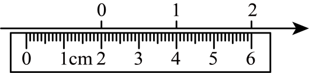
3．（25-26七年级上·四川广元·期中）有下列四个算式①(−5)+(+3)=−8；②−−23=6；③(+56)+(−16)=46=23；④−3+(−13)=9．其中，正确的有（ ）．
A．0个 B．1个 C．2个 D．3个
4．（25-26七年级上·河南商丘·期中）如图是一种转盘型密码锁，每次开锁时需要先把表示“0”的刻度线与固定盘上的标记线对齐，再依据三个密码按顺时针或逆时针方向旋转带有刻度的转盘即可解锁．已知顺时针方向转动m个小格记为“−m”，逆时针方向转动n个小格记为“+n”若密码为“+15，−7，−3”，则顺利开锁时，标记线对准的刻度线表示的数是 ．
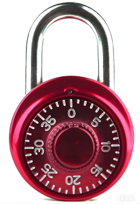
【考点15 有理数的减法】
1．（25-26七年级上·山东临沂·期中）把−478−−512−+318写成省略括号和加号的形式为 ．
2．（25-26七年级上·山西阳泉·期中）用1个“⊕”表示“+1”，用1个“ ”表示“−1”，图1可以解释算式“3−−1=4”的运算过程与结果，类似地，图2可以解释算式“ ”的运算过程与结果．
”表示“−1”，图1可以解释算式“3−−1=4”的运算过程与结果，类似地，图2可以解释算式“ ”的运算过程与结果．
3．（25-26七年级上·黑龙江佳木斯·期中）甲地海拔300m，乙地海拔−50m，则甲地比乙地高 m．
4．（25-26七年级上·山东滨州·期中）我们平常生活中用的是10进制进行计算，如27+158，在进行计算时两数最右边对齐，7+8=15，满10后5留在最右边，向左进一，从而结果为185；在计算减法35−18时，最右边一位对齐，向左借位，借一得十，结果为17．在古代，有个部落采用的是五进制，满五进一．即当数字为8时，记做135，那么类比十进制的加减法，在计算1235−335时，它的结果为 （答案也记录为五进制）．
【考点16 有理数的加减混合运算】
1．（25-26七年级上·辽宁沈阳·期中）计算−1+2−3+4−5+6−7+8−⋅⋅⋅−2023+2024= ．
2．（24-25七年级上·河北沧州·期末）要使式子“613−78+□”能用运算律进行简便运算，“□”里填上的数是 ．（写出一个合适的即可）
3．（25-26七年级上·河北保定·期中）如图，a,b,c,d都是有理数，若每个圆圈里的数都等于与它相邻的两个圆圈里数的和，则b+c=（ ）
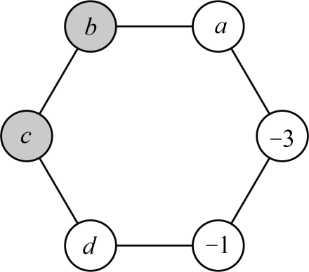
A．4 B．3 C．−2 D．−4
4．（25-26七年级上·安徽安庆·期中）利用有理数的加法解决下列各题：
(1)一天早晨的气温是−7℃，中午上升了11℃，晚上又下降了9℃，则晚上的气温是多少？
(2)一家电脑公司的仓库原有电脑100台，一个星期调入、调出电脑的记录是：调入38台，调出42台，调入27台，调出33台，调入40台，则这个仓库现有电脑多少台？
【考点17 有理数的乘法】
1．（25-26六年级上·山东淄博·期中）请你列举两个有理数，使它们的积为1． ．
2．（25-26七年级上·贵州铜仁·阶段练习）大于−2.1且小于3.9的所有整数之积是 ．
3．（25-26七年级上·宁夏银川·期中）下列四个有理数−3、0、1、－2，任取两个相乘，积最大为 ．
4．（25-26九年级上·黑龙江哈尔滨·期中）一台织布机平均每小时织布1100千米，某织布厂有500台这样的织布机，12小时能织布 千米．
【考点18 倒数】
1．（25-26七年级上·江苏泰州·期中）−3的倒数是 ．
2．（25-26七年级上·云南昆明·期中）下列两个数互为倒数的是（ ）
A．20和−(−1) B．1和−1 C．−89和−98 D．−12和2
3．（25-26七年级上·山东菏泽·期中）−35的相反数的倒数是 ．
4．（25-26七年级上·山东菏泽·期中）已知a,b互为相反数且b≠0，c,d互为倒数，则a+b2024+ba2025+−cd2024= ．
【考点19 有理数的除法】
1．（25-26七年级上·河北邯郸·期中）文文在计算−24÷a时，误将“÷”看成“+”，结果是−8，则−16÷a的正确结果是 ．
2．（24-25七年级上·江苏镇江·期末）丹阳某一个啤酒厂为了回收空啤酒瓶，规定每3个空啤酒瓶可以换一瓶啤酒，李琛3人一共买了一箱（共12瓶），可以借1个空瓶，那么他们还可以再兑换 瓶啤酒．
3．（25-26九年级上·湖北武汉·期中）你见过树木的年轮吗？从树木的年轮，可以知道树木的年龄，把树干的横截面看成圆形的，如果一棵20年树龄的树的树干直径是23cm，这棵树的半径平均每年增加（ ）
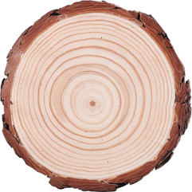
A．2320cm B．2340cm C．4023cm D．2023cm
4．（25-26七年级上·甘肃临夏·期中）数学老师布置了一道思考题：
“计算：−112÷13−56n，小明仔细思考了一番，用了一种特殊的方法解决了这个问题：原式的倒数为13−56÷−112=13−56×−12=−4+10=6，所以−112÷13−56=16请你运用小明的方法计算：−136÷12+19−118−23．
【考点20 有理数的乘方】
1．计算： −−33= ．
2．（25-26六年级上·上海虹口·期中）如图是一个“数值转换机”，如果输出的结果为16，那么输入的a值是 ．
3．（25-26七年级上·山东临沂·期中）观察下列表格中的数字排列规律，第⑧个表中，a−b的值为 ．

4．（25-26七年级上·江苏宿迁·期中）把一个正三角形分成四个形状大小都一样的三角形，第一次挖去中间的一个小三角形，对剩下的三个小正三角形再重复以上做法……设第99次挖去后剩下的三角形个数为a，第100次挖去后剩下的三角形个数为b，那么3a−b= ．
【考点21 偶次方的非负性】
1．（25-26七年级上·山东临沂·期中）如果a+2+b−12=0，那么代数式a+b2025的值是 ．
2．（25-26七年级上·江苏徐州·期中）若x−12+y+22=0，则xy2025= ．
3．（25-26七年级上·江苏无锡·期中）已知3x−6+3+y2=0，则yx= ．
4．（25-26七年级上·河南驻马店·期中）已知a+12+b+2=0，c是最小的自然数，d是最大负整数，则代数式8b−a−2c−d的值是 ．
【考点22 有理数的混合运算】
1．（25-26七年级上·河南南阳·期中）下列计算正确的是（ ）
A．−30×37−20×−37=1507 B．−82+72÷36=−80
C．−1÷−5×15=1 D．−45÷+45×−827=−827
2．（25-26七年级上·广东中山·期中）乐乐在数学学习中遇到了神奇的“数值转换机”，按如图所示的程序运算，如果输入−3，则输出的结果是（ ）

A．−3 B．7 C．−23 D．−13
3．（25-26七年级上·河南驻马店·期中）计算：
(1)−42×−34+−58
(2)−12−1−0.5÷13×3−−32
(3)8×−25−−29×−4+−8×35
4．（25-26七年级上·福建漳州·期中）学校准备订购一批篮球和跳绳，经过市场调查后发现篮球每个定价100元，跳绳每条定价20元．某体育用品商店提供A、B两种优惠方案：
A方案：买一个篮球送一条跳绳； B方案：篮球和跳绳都按定价的90%付款．
已知要购买篮球50个，跳绳x条x>50．
(1)按A方案购买，需付款 元；按B方案购买，需付款 元．（用含x的代数式表示）
(2)当x=100时，请通过计算说明用哪种方案购买较为合算？
(3)当x=100时，发现若按A方案购买篮球50个（送50条跳绳），剩余的跳绳按B方案购买，会更省钱．请直接写出比按A方案购买省 元．
【考点23 科学记数法—表示较大点的数】
1．（24-25九年级下·福建厦门·阶段练习）将867000用科学记数法表示为 ．
2．（25-26七年级上·黑龙江哈尔滨·期中）若整数717…0用科学记数法表示为7.17×1013，则原数中“0”的个数为 ．
3．（25-26七年级上·河南周口·期中）生物学指出，在食物链中大约有10%的能量能流动到下一个营养级，在H1→H2→H3→H4→ H5→H6这条食物链中（Hn表示第n个营养级，n=1,2,⋅⋅⋅⋅⋅⋅6），要使H6获得800千焦的能量，那么需要H1提供的能量用科学记数法可以表示为 千焦．
4．（24-25九年级下·江西宜春·阶段练习）2024年世界羽联巡回赛总决赛在杭州成功举办，是中国羽毛球协会、杭州市人民政府主办的世界羽联巡回赛体系中最高级别赛事，也是2024年世界羽联世界巡回赛事收官战，该赛事奖金总额达到250万美元．数据250万用科学记数法表示为 ．
【考点24 近似数】
1．（25-26七年级上·湖北十堰·月考）用四舍五入法对1.8935精确到0.001得到的近似数为 ．
2．近似数6.15×104精确到 位．
3．（25-26七年级上·黑龙江佳木斯·期中）近似数9.63的准确值a的取值范围是 ．
4．（25-26七年级上·四川德阳·期中）用四舍五入法按要求对0.05019分别取近似值，其中错误的是（ ）
A．0.1（精确到0.1） B．0.0502（精确到0.0001）
C．0.050（精确到千分位） D．0.10（精确到百分位）
【考点25 代数式的相关概念】
1．（25-26七年级上·全国·期中）“腹有诗书气自华，最是书香能致远．”为鼓励和推广全民阅读活动，某书店开展促销活动，促销方法是将原价为x元的一批图书以0.8x−15元的价格出售，则下列说法中，能正确表达这批图书的促销方法的是（ ）
A．在原价的基础上打8折后再减去15元
B．在原价的基础上打2折后再减去12元
C．在原价的基础上减去15元后再打8折
D．在原价的基础上减去12元后再打8折
2．（25-26七年级上·湖南岳阳·期中）在式子：①10，②a=2,③x,④xy2,⑤m+n<0中，代数式有 个
3．（25-26七年级上·河北石家庄·期中）能用代数式2a+4表示的是（ ）
A． B．
B．
C． D．
D．
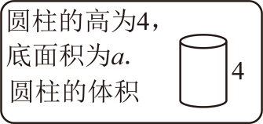
4．对于式子“m+n”可以赋予实际意义：一个篮球的价格是m元，一个足球的价格是n元，体育老师购买一个篮球和一个足球共需要付款m+n元，请你对式子“2a”赋予一个实际意义： ．
【考点26 列代数式】
1．（25-26七年级上·福建宁德·期中）一种商品每件成本a元，原来按成本增加20%定出价格，现在由于库存积压减价，按原价的80%出售，现售价是 元．
2．（25-26七年级上·陕西西安·期中）2025年暑期某日，陕西历史博物馆珍宝馆的参观人数为x人，基本陈列厅的人数比珍宝馆的3倍少8人，文创区的人数是珍宝馆人数的2倍．那么珍宝馆，基本陈列厅，文创区这三个区域的总人数可表示为（ ）
A．6x−8 B．5x−8 C．5x+8 D．6x+8
3．（25-26七年级上·黑龙江哈尔滨·期中）两船从同一港口同时出发反向而行，甲船顺水，乙船逆水，两船在静水中的速度都是a千米/时（a>15），水流速度是15千米时，2小时后两船相距 千米．
4．（25-26七年级上·河南商丘·期中）如图中表示阴影部分面积错误的代数式是（ ）
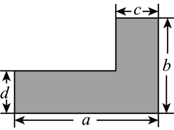
A．ab+bc B．cb+da−c
C．ad+cb−d D．ab−a−cb−d
【考点27 代数式的值】
1．（25-26七年级上·北京海淀·期中）已知x与关于x的代数式ax+b的值对应如下图：
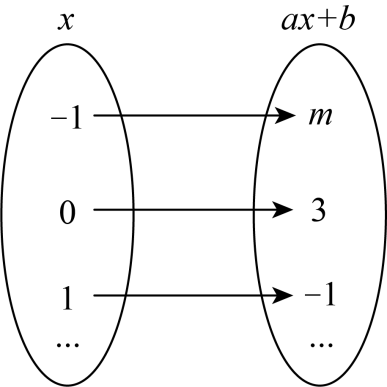
则m的值为 ．
2．（25-26七年级上·河南商丘·期中）当x=−2，代数式3x2−2x+1的值为 ．
3．（25-26七年级上·湖南常德·期中）代数式x−2y=1，则代数式2x−4y−2的值为 ．
4．（25-26七年级上·江苏泰州·期中）在如图所示的运算程序中，若开始输入x的值是2，第1次输出的结果是1，第2次输出的结果是4，…，依次继续下去，第2025次输出的结果是（ ）

A．1 B．2 C．3 D．4
【考点28 单项式】
1．下列代数式：①23；②75m；③34xy2；④2x+3y3；⑤abm；⑥6x+3y；⑦xπ；⑧x，其中是单项式的是 ．(填序号)
2．（25-26七年级上·浙江杭州·期中）单项式−πa2b3的系数是 ．
3．（25-26七年级上·内蒙古包头·期中）有三个条件：①只含有字时a，b，c，②系数为−2，③次数为4，能满足这三个条件的单项式为 （写出一个即可）．
4．（25-26七年级上·云南曲靖·期中）若有一组按一定规律排列的单项式：2y,−2xy2,2x2y3,−2x3y4,2x4y5,−2x5y6,⋯，则第n个单项式是（ ）
A．−2xn−1yn B．2n−1yn C．(−1)n+1⋅2xn−1yn D．(−1)n⋅2xn−1yn
【考点29 多项式】
1．（25-26七年级上·河南周口·期中）多项式−2x2y+xy4+1的次数是 ．
2．（25-26七年级上·广西贵港·期中）若x3+m+1x2−3没有二次项，则m的值是 ．
3．（25-26七年级上·河南驻马店·期中）将多项式−a3+b2+3a2b−1−3ab2按字母a的升幂排列为 ．
4．（25-26七年级上·江苏泰州·期中）若整式ax3y−2xyb−1+2x3y−3化简后是关于x、y的三次二项式，则ab的值为 ．
【考点30 整式】
1．（25-26七年级上·黑龙江哈尔滨·期中）下列式子中：3m+2，a，abc，x−y，8x3−7x2+2，整式有 个．
2．（25-26八年级上·云南曲靖·期中）下列式子：①0；②1x；③2x3−8x2+3；④x+1x2+1；⑤6a2b；⑥2x+3y．其中是整式个数的有（ ）
A．2个 B．3个 C．4个 D．5个
3．（25-26七年级上·河南鹤壁·期中）将下列各式的序号填入相应的大括号中：
①2mn，②x2−3y22，③a2+b−1，④−1x+y2，⑤0，⑥−32a，⑦2x3+5，⑧x2y．
单项式：{ …}；
多项式：{ …}；
三次多项式：{ …}；
整式：{ …}．
4．观察下列各式：−ab，−a2，2a，a+b，a2+a−1．回答下列问题：
(1)单项式分别为：______________________________；
(2)多项式分别为：_________________________________；
(3)整式有___________个；
(4)−ab的系数为__________；
(5)次数最高的多项式为__________________．
【考点31 同类项】
1．（25-26七年级上·湖南长沙·期中）下列式子是ab2的同类项的是（ ）
A．a2b B．−2ab C．−ab2 D．abc
2．（25-26七年级上·山东临沂·期中）若单项式5xmy4与12x6y2n是同类项，则m+n= ．
3．（25-26七年级上·安徽淮南·期中）以下各组中：①2x2y3与x3y2；②−x2yz与−x2y；③10mn与23mn；④−a5与−35；⑤−3x2y与0.5yx2；⑥−125与12．是同类项的是： （填写序号）．
4．（24-25七年级上·河北保定·期中）若单项式−12xm+3y与2x4yn+3的差是单项式，那么(m+n)2024的值为（ ）
A．−1 B．0 C．1 D．22024
【考点32 合并同类项】
1．（25-26七年级上·辽宁大连·期中）下列计算正确的是（ ）
A．x2+x2=x4 B．x2+x3=2x5 C．3x−2x=1 D．x2y−2x2y=−x2y
2．（25-26七年级上·内蒙古包头·期中）若关于a，b的单项式mab2与−2abn的和为0，则nm= ．
3．（25-26七年级上·吉林·月考）当k= 时，多项式x2+k−1xy−5−xy中不含xy项．
【考点33 去括号与添括号】
1．（25-26七年级上·河南平顶山·期中）下列各项中，去括号正确的是（ ）
A．42xy−y2=8xy−4y2 B．−2x−y+2=−2x−y+2
C．−3m+n=−3m−n D．5−a2+3a+1=−5a2+15a
2．（25-26七年级上·安徽六安·期中）将代数式m−2n−a+b添括号后，正确的是（）
A．m−2n−a+b B．m−2n−a−b
C．m−a−2n+b D．m−b−a−2n
3．已知a−2b=5,c−2d=9，那么a−c−2b−d的值为 ．
【考点34 整式的加减】
1．（25-26七年级上·四川广元·期中）化简∶
(1)3ab−a2−2ba−3a2；
(2)4y2−3y−3−2y+2y2
(3)12x−2x−13y2+−32x+13y2
2．（25-26七年级上·天津·月考）下面是小芳做的一道运算题，但她不小心把一滴墨水滴在了上面：
−x2+5xy−12y2−−12x2+4xy−32y2=−12x2 +y2，阴影部分即为墨迹，那么被墨水遮住的一项应是（ ）
+y2，阴影部分即为墨迹，那么被墨水遮住的一项应是（ ）
A．+xy B．−xy C．+9xy D．−7xy
3．（25-26七年级上·江苏泰州·期中）已知关于m的多项式：3am2+5abm−b与3bm2−5abm+2a的和是一个单项式（a，b为非零常数），那么ab=
【考点35 整式的加减—化简求值】
1．（25-26七年级上·北京西城·期中）先化简，再求值：
(1)已知：a2−2a−1=0，求4a2+a−5−3a+a2的值．
(2)已知：m+32+n−12=0，求6m2n−m2−2mn2−3m2n+4mn2的值．
2．（25-26七年级上·四川成都·期中）已知A=3x−2xy+7y,B=y+2xy−3x．
(1)当x=−1,y=2，求A−B的值；
(2)若A−B的值与y的取值无关，求A−B的值．
3．（25-26七年级上·湖北襄阳·期中）若多项式2x3−8x2+mx−10与多项式x3+3m+7x2−5x−7的差不含x的二次项，则m3的值为 ．
【考点36 整式加减的应用】
1．（25-26七年级上·安徽淮南·期中）如图所示，将边长分别为x，y，z的正方形放置在长x+y，宽x+z的长方形中．已知x>y>z，则阴影部分的周长为（ ）
A．4x+2z B．2x+4y C．2x+2y+z D．4x+y+z
2．（25-26七年级上·江苏淮安·期中）一个两位数的十位上的数字为a，个位上的数字为b，这个两位数记作ab；一个三位数的百位上的数字为x，十位上的数字为y，个位上的数字为z，这个三位数记作xyz．
问题：ab+ba能被11整除吗？请说明理由；
小明发现：能被11整除，理由为：
∵ab+ba=10a+b+10b+a=11a+b，
∴ab+ba能被11整除．
请根据小明的思路解决以下问题
(1)ab−ba_______（填能或不能）被9整除；
(2)证明：对于三位数xyz，如果x+y+z能被3整除，那么xyz就能被3整除．
3．（25-26七年级上·江苏连云港·期中）运动会期间，各班都如火如荼地准备着入场式，七年级8班计划购买若干裙子和帽子作为演出服装，经调查发现网上某店铺每条裙子卖90元，每顶帽子卖12元，给出的优惠方案如下：方案一，以原价购买，购买一条裙子赠送两顶帽子；方案二，总价打8折．若该班级计划购买a条裙子和b顶帽子（b≥2a）．
(1)请用含a、b的代数式分别表示出两种方案的实际费用；
(2)当a=10，b=54时，哪种方案更便宜呢？请通过计算说明；
(3)当a=12时，两种方案的费用相同，请求出此时b的值．
【考点37 直线、射线、线段】
1．（25-26七年级上·河南郑州·期中）如图，点A、B、C是直线l上的三个点，则图中共有线段、射线条数分别是（ ）

A．2，3 B．3，3 C．3，6 D．2，6
2．（25-26七年级上·河南周口·期中）下列说法正确的是（ ）
A．射线AB和射线BA是同一条射线 B．两点之间，直线最短
C．两点确定一条直线 D．若AB=BC，则点B是AC的中点
3．按要求完成作图及作答：
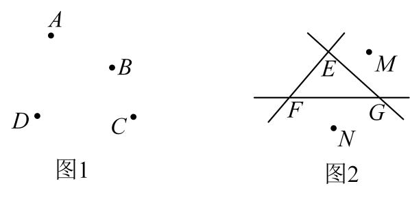
(1)如图1，平面上有四个点A，B，C，D，作射线BC；
(2)如图1，取一点P，使点P既在直线AB上又在直线CD上；
(3)如图1，若点M到A，B，C，D四点距离之和最短．画出点M的位置；
(4)如图2，平面内三条直线交于E、F、G三点，点M、N是平面内另外两点，若分别过点M、N各作一条直线，则新增的两条直线使得平面内最多新增__________个交点．
【考点38 两点确定一条直线】
1．（24-25六年级下·山东烟台·期末）小明在设计黑板报时，想在黑板上画一条笔直的参照线，由于尺子不够长，他想出了如下办法：①在一根长度合适的毛线上涂满粉笔末；②由两个同学分别按住毛线的两端，并绷紧；③捏起毛线后松开，便可在黑板上弹出一条笔直的参照线．上述“画参照线”方法的依据是 ．
2．在墙壁上固定一根横放的木条，至少需要钉子的枚数是（ ）
A．1 B．2 C．3 D．无法确定
3．（24-25七年级上·浙江台州·期末）如图，跳高比赛时，只需两个支点就能固定横杆，这种做法依据的数学基本事实是 ．
【考点39 尺规作线段】
1．如图，线段a，b请按下列语句作出图形：（不写作法，保留作图痕迹）
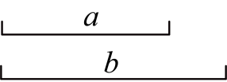
(1)作射线AM；
(2)请用尺规在射线AM上依次截取线段AB，BC，使得AB=a，BC=b
2．（24-25七年级上·福建泉州·期末）如图，已知线段a,b，作一条线段使它等于2a−b．作法：①作射线AM；②用圆规量出线段a的长，在射线AM上顺次截取AB=a,BC=a；③用圆规量出线段b的长，在线段AC上截取CD=b，那么所作的线段是（ ）
A．AD B．BD C．CD D．AC
3．（24-25七年级上·陕西西安·月考）如图，AB=12，点C、D分别是线段AB上两点（CD>AC，CD>BD），用圆规在线段CD上分别截取CE=AC，DF=BD，若点E与点F恰好重合，则CD的长度为 ．

【考点40 两点之间线段最短】
1．（24-25七年级上·湖南株洲·期末）如图示，从A地去往C地有4条路线，景元同学发现路线③最快，能正确解释这一现象的数学知识是（ ）
A．经过一点有无数条直线
B．两点之间，线段最短
C．两点确定一条直线
D．两点之间线段的长度，叫做两点之间的距离
2．（24-25七年级上·广东珠海·期末）下列三种现象中，可以用“两点之间，线段最短”来解释的现象是 (填序号)．
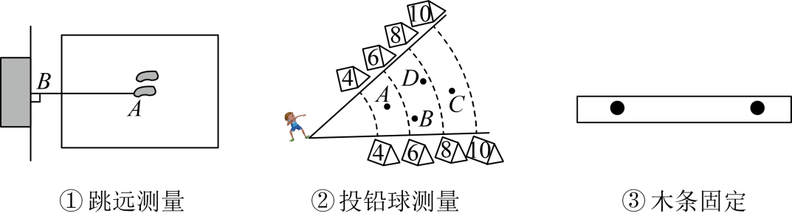
3．（24-25七年级上·北京昌平·期末）昌平区南邵镇张各庄村的银杏林是北京面积最大的银杏林，这里有超过80万株的银杏树．小林同学在游玩时收集了一些银杏落叶用来制作手工，如图，她用剪刀沿直线将一片平整的银杏叶剪掉一部分，发现剩下的银杏叶的周长比原银杏叶周长要小，理由是 ．

【考点41 两点间的距离】
1．（24-25七年级下·内蒙古乌海·期末）若点A，B，C在同一条直线上，如果线段AB=7cm，线段BC=4cm，那么A，C两点之间距离是 ．
2．（24-25七年级上·福建泉州·期末）如图，数学课上，刘老师用圆规在直线l上依次作线段AB=a，BC=a，CD=b，那么这样作图得到的线段AD的长是（ ）
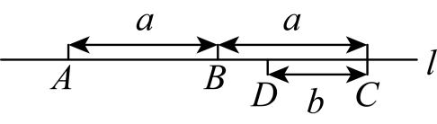
A．a+2b B．2a+b C．b−2a D．2a−b
3．（24-25七年级上·福建福州·期末）已知线段AD=22，点B,C在线段AD上，BC:CD=3:1,M是AB的中点，N是CD的中点．

(1)如图1，若AB=10，求MN的长度．
(2)如图2，若MC−NB=1，求MC的长度．
【考点42 线段的和差】
1．（25-26七年级上·四川成都·期中）已知点C在线段AB上，AC=2BC，线段DE在线段AB上移动，且点D在点E的左侧．
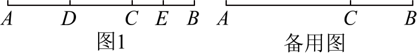
(1)若AB=18，DE=8．
①如图1，当E为BC中点时，求AD的长；
②点F（异于A，B，C点）在线段AB上，AF=3AD，CE+EF=3，求AD的长；
(2)若AB=2DE，且满足关系式AD+EC=2BE，求CDAB的值．
2．（25-26七年级上·河北石家庄·期中）定义新概念：如图1，点P在线段AB上，图中共有3条线段AP，PB和AB，若有一条线段的长度是另一条线段长度的3倍，则称点P是线段AB的“巧点”，如图2，若AB=20cm，点P是的AB的“巧点”，则AP= cm．

3．（25-26七年级上·福建厦门·期中）在数轴上剪下长度为16（从−2到14）的一条线段，并把这条线段沿某点折叠，然后在重叠部分某处剪一刀得到三条线段（如图）．若这三条线段的长度之比为2:1:1，则折痕处对应的点所表示的数是 ．
【考点43 比较线段的长短】
1．（24-25七年级上·山西朔州·期末）如图，用圆规比较线段的长短，圆规的两个支腿的夹角不变，其中下列线段比PQ长的是（ ）

 B．
B．
C． D．
D．
2．（24-25六年级上·上海·月考）用叠合法比较线段AB和线段CD的大小，将线段AB移到线段CD的位置，使端点A与端点C重合，线段AB和线段CD叠合，则若点B ，则AB>CD．
3．（24-25七年级上·河北承德·期末）一个点在有公共端点的两条线段组成的一条折线上，且把这条折线分成长度相等的两部分，这个点叫作这条折线的“折中点”．如图所示，如果点D是折线A−C−B的“折中点”，请解答以下问题：

(1)当AC>BC时，点D在线段_____上；
(2)当点D与C重合时，直接比较AC，BC的大小．
(3)若E为线段AC的中点，EC=4，CD=3，求BC的长度．
【考点44 角的概念】
1．（25-26七年级上·河北唐山·期中）如图，在∠AOC内部作了一条射线OB，下列说法正确的是（ ）

A．∠AOC可以用∠O表示 B．∠1=∠2
C．∠2与∠COB是同一个角 D．∠AOC=∠1+∠AOB
2．在综合与实践课上，将∠A与∠B两个角的关系记为∠A=n∠Bn>0，探索n的大小与两个角的类型之间的关系（ ）
A．当n=2时，若∠A为锐角，则∠B为锐角
B．当n=2时，若∠A为钝角，则∠B为钝角
C．当n=12时，若∠A为锐角，则∠B为锐角
D．当n=12时，若∠A为锐角，则∠B为钝角
3．如图，AOE是一条直线，图中的角共有（ ）
A．4个 B．8个 C．9个 D．10个
【考点45 钟面角】
1．（24-25九年级上·广东肇庆·期末）时钟上的分针旋转一周需要60min，则经过15min，分针旋转了（ ）
A．30° B．60° C．90° D．120°
2．（24-25七年级上·福建泉州·期末）昨天晚上，当挂钟报时6点整时，小丽开始做数学作业，当她完成数学作业时，挂钟里时针和分针恰好第一次互相垂直，则小丽做数学作业用了 分钟．
3．（24-25七年级上·江苏盐城·期末）【问题提出】
（1）如图1，数轴上点A表示的数为a，点B表示的数为b，已知xa+by12与x4yb是同类项，点C是线段AB的中点．
①a=________，点C表示的数是________；
②若点P从点A出发，以每秒5个单位长度的速度沿数轴向左运动，同时，点Q从点C出发，以每秒7个单位长度的速度也沿数轴向左运动，几秒后，P、Q两点之间的距离为2？
【方法迁移】
（2）如图2，∠DOE=120°，OF平分∠DOE．现有射线ON从OF出发，以每秒15°的速度绕点O顺时针旋转，同时，射线OM从OD出发，以每秒20°的速度也绕点O顺时针旋转，当OM旋转一周时，这两条射线同时停止旋转．问经过几秒后，射线OM、ON所成的角为25°？
【拓展运用】
（3）一天早上，小明看到家里闹钟钟面显示7点整（如图3，时针指向7，分针指向12），此时请直接写出经过多少分钟后，该闹钟的分针与时针所成的角首次变成30°．

【考点46 方向角】
1．（25-26九年级上·河北邢台·期中）如图，已知从点A看点B，仰角为22°，嘉淇做一个数学游戏，把由仰角描述换成用方向角来描述，则点A位于点B的（ ）

A．南偏西68°方向上 B．南偏西22°方向上
C．北偏东22°方向上 D．北偏东68°方向上
2．（24-25七年级上·吉林四平·期末）如图所示，射线OA表示 28°方向，∠AOB= °．

3．（24-25七年级下·辽宁沈阳·期末）如图，OA是北偏东30°，OB为南偏东20°，则∠AOB等于 ．
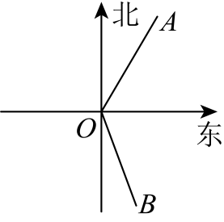
【考点47 度分秒的换算】
1．下列运算正确的是（ ）
A．34.5°=34°5′ B．90°−23°45′=66°15′
C．12°34′×2=25°18′ D．24°24′=24.04°
2．（24-25七年级上·山西运城·期末）已知∠1+∠2=90°，若∠1=27°32′，则∠2的度数为（ ）
A．63°32′ B．62°28′ C．62°32′ D．63°28′
3．（24-25六年级下·山东青岛·期中）计算
(1)180°−37°42′56″
(2)25°36′×4
【考点48 角平分线的定义】
1．（25-26七年级上·河北秦皇岛·期中）如图，O为直线DA上一点，∠AOB=130°，OE是∠AOB的平分线，∠FOB=90°．

(1)求∠DOB的度数．
(2)求∠AOF和∠FOE的度数．
2．（25-26七年级上·辽宁沈阳·期中）已知∠AOB=80°，射线OC和射线OD在∠AOB内部，且∠AOC=30°，∠COD=40°，射线OE,OF分别平分∠BOC，∠COD，则∠EOF= °.
3．（24-25七年级上·福建福州·期末）阅读理解：已知一个锐角，从这个角的顶点出发，在角的外部作一条射线，分别与这个角的两边组成两个角，若这两个角互为余角，则称该射线为“外邻余线”，例如，如图1，已知∠AOB(∠AOB<90°)，射线OC在∠AOB外部，射线OC分别与∠AOB的两边OA、OB所组成的两个角是∠AOC和∠BOC，若∠AOC和∠BOC互为余角，则称射线OC是∠AOB的“外邻余线”．
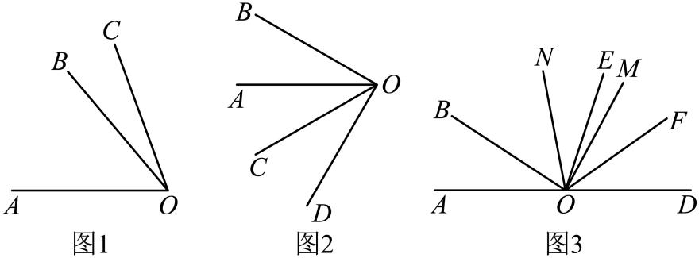
(1)如图1，已知∠AOB=50°，OC是∠AOB的“外邻余线”．求∠BOC的度数．
(2)如图2，已知OC是∠AOB的“外邻余线”，OD是∠AOC的“外邻余线”，且∠BOD=90°，试判断OA，OC是否为∠BOD的三等分线？并说明理由．
(3)如图3，已知点A，O，D在同一条直线上，∠AOB=α(α<60°)，OE平分∠BOD，OF平分∠DOE，OM和ON分别是∠DOF和∠EOF的“外邻余线”，求∠MON的度数（用含α的式子表示）．
【考点49 角的大小比较】
1．（24-25七年级上·北京·期末）右图所示的网格是正方形网格，∠ABC ∠DEF．(填“>”，“=”或“<”)

2．（24-25七年级上·江西吉安·期末）已知∠α=39°18′，∠β=39.18°，∠γ=39.3°，下面结论正确的是（ ）
A．∠α=∠γ>∠β B．∠γ>∠α=∠β
C．∠α<∠β<∠γ D．∠γ<∠α<∠β
3．（24-25七年级上·重庆江津·期末）如图，直角三角板DOE的直角顶点O在直线AB上，OE平分∠BOF．
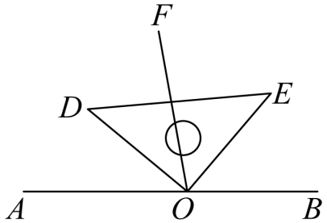
(1)比较∠AOD和∠DOF的大小，并说明理由；
(2)若∠EOF:∠AOF=5:8，求∠BOE的度数．
【考点50 角的计算】
1．（25-26八年级上·内蒙古乌兰察布·期中）如图，△ABC是一块直角三角尺，其中∠BAC=30°，直尺的一边DE经过顶点A，若∠DAC=32∠BAE，则∠DAB的度数为 ．

2．（24-25七年级下·黑龙江大庆·期中）如图1，射线OC在∠AOB的内部，图中共有3个角：∠AOB，∠AOC和∠BOC，若其中有一个角的度数是另一个角度数的三倍，则称射线OC是∠AOB的“启仔等分线”．如图2，∠MPN=80∘，若射线PE绕点P从PN位置开始，以每秒8∘的速度顺时针旋转，当∠EPN首次等于180∘时停止旋转，设旋转的时间为t(秒)．当t= 时，射线PN是∠EPM的“启仔等分线”．

3．（25-26七年级上·江西吉安·期中）已知将一副三角尺（直角三角尺OAB和OCD）的两个顶点重合于点O，∠AOB=90°，∠COD=30°；

(1)如图1，将三角尺OCD绕点O逆时针方向转动，当OB恰好平分∠COD时，求∠AOC度数；
(2)如图2，当三角尺OCD摆放在∠AOB内部时，作射线OM平分∠AOC，射线ON平分∠BOD，如果，三角尺OCD在∠AOB内绕点O任意转动，∠MON的度数是否发生变化？如果不变，求其值；如果变化，说明理由．
4．（25-26七年级上·河北唐山·期中）如图，点O为直线AB上一点，以O为顶点的直角∠COD绕点O在直线AB上方旋转，作射线OE、OF分别平分∠AOC和∠BOD．
（1）当∠AOE=28°时，∠DOF的度数为 ；
（2）在旋转过程中，∠EOF的度数始终为 ．

【考点51 多边形和圆的初步认识】
1．将一张正方形的纸片减去一个角后，剩下纸片的角的个数为（ ）
A．5 B．3或4 C．4或5 D．3或4或5
2．过七边形的一个顶点可以画n条对角线，则n的值是（ ）
A．3 B．4 C．5 D．6
3．（24-25七年级上·陕西西安·阶段练习）如图，阴影部分扇形的圆心角大小是 ．
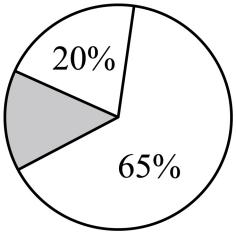
4．过某一个多边形一个顶点的所有对角线，将这个多边形分成4个三角形，这个多边形的边数是 ．
【考点52 方程的定义】
1．（24-25七年级上·全国·课后作业）下列各式中，属于方程的是（ ）
A．2x+3−x+2 B．3x+1>4x−2
C．3x−1=4x+2 D．2+5=7
2．下列式子：①3x+2=5x−1；②−122+34=1；③2x+3≤5；④y2−1=2y；⑤25x+7y=36，其中是方程的是 ．（填序号）
3．在①2−5；②1+7x=−8y+3；③x=6；④3x=2x−9；⑤2x>7中，方程共有（ ）
A．1个 B．2个 C．3个 D．4个
【考点53 方程的解】
1．（25-26七年级上·黑龙江齐齐哈尔·月考）下列方程中，解为x=2的是（ ）
A．3x+6=0 B．3x−2=4 C．2x+3=−7 D．x−3=5
2．（25-26七年级上·重庆璧山·期中）若x=2是方程ax+3x=4的解，则a的值是（ ）
A．−1 B．5 C．1 D．−5
3．（25-26七年级上·辽宁铁岭·期中）已知关于x的方程3x−2k=4的解是x=k，则k的值是 ．
【考点54 一元一次方程的定义】
1．（24-25七年级上·辽宁抚顺·期末）下列方程中，是一元一次方程的是（ ）
A．x2+2x+1=4 B．8y−9=9−y
C．2x+y=4 D．2x−1=8
2．（24-25七年级上·河南·期末）若方程m−1x2+mx−x+2=0是关于x的一元一次方程，则m的值为（ ）
A．1 B．1或−1 C．−1 D．2
3．（24-25七年级上·全国·期末）已知(m−1)xm−2024=2025是关于x的一元一次方程，则m= ．
【考点55 等式的性质】
1．（24-25七年级上·陕西安康·期末）已知3m+2n−6=m+4n，利用等式的性质比较m与n的大小关系：m n．（填“>”“<”或“=”）
2．（25-26七年级上·湖北宜昌·期中）下列变形中，不正确的是（ ）
A．若a−3=b−3，则a=b B．若a2=b2，则a=b
C．若a=b，则ac2+1=bc2+1 D．若ac=bc，则a=b
3．（24-25七年级下·浙江杭州·期中）已知b+c=t，a+b=k
（1）若t=2k=2，则c与a的等量关系是 ．
（2）若c−2a=3t，则c−3a= ．（用含k，t的代数式表示）
【考点56 解一元一次方程】
1．（25-26七年级上·安徽马鞍山·期中）解方程：
(1)2100−15x=60+5x
(2)2x+13−1=x−10x+16．
2．（25-26七年级上·安徽淮北·期中）小军在解关于x的方程2x+15−1=x+m2去分母时，方程左边的−1没有乘10，因而求得方程的解为x=−4，则这个方程的正确解为 ．
3．（25-26七年级上·安徽合肥·期中）把方程3x0.2−1=2x0.3的分母化为整数可得方程（ ）
A．30x2−10=20x3 B．30x2−1=20x3
C．30x2−10=2x3 D．3x2−10=2x3
【考点57 一元一次方程的解】
1．（25-26七年级上·安徽淮北·期中）若方程3x−1=2x+1的解与关于x的方程6−2k=2x−1的解相同，则k的值为（ ）
A．59 B．−89 C．−1 D．−53
2．（24-25七年级上·湖北恩施·阶段练习）已知a−3x2−a+3x+8=0是关于x的一元一次方程．
(1)求a的值，并求解上述一元一次方程；
(2)若上述方程的解是关于x的方程5x−2k=4的解的3倍，求k的值．
3．（25-26七年级上·安徽安庆·期中）若关于x的一元一次方程ax=b的解满足x=b+a，则称该方程为“友好方程”．例如：方程2x=−4的解为x=−2，而−2=−4+2，则该方程为“友好方程”．
(1)在方程①−2x=4；②4x=−163；③12x=−1中，为“友好方程”的是_____；（填写序号即可）
(2)若关于x的一元一次方程3x=b是“友好方程”，求b的值；
(3)若关于x的一元一次方程−2x=mn+nn≠0是“友好方程”，且它的解为x=n，求n的值．
【考点58 由实际问题抽象出一元一次方程】
1．（25-26七年级上·黑龙江哈尔滨·期中）一台仪器由1个A部件和3个B部件构成．用1立方米钢材可以做40个A部件或240个B部件．现要用6立方米钢材制作这种仪器，应用多少立方米钢材做A部件，多少立方米钢材做B部件，才能制作尽可能多的仪器？设用x立方米钢材制作A部件，则可列式为（ ）．
A．40x=2406−x×3 B．3×40x=2406−x
C．240x=406−x×3 D．3×240x=406−x
2．（25-26七年级上·江苏南京·期中）如图，将正方形纸片剪去一张宽为4cm的长方形纸条，再将剩下的纸片剪去一张宽为5cm的长方形纸条，两次剪去的长方形纸条面积相等．设原正方形纸片的边长为xcm，根据题意可列方程为 ．

3．（25-26七年级上·浙江舟山·期中）在解决问题“小喜在A、B两地间进行骑车训练，去时每小时行18千米，用了2.5小时；返回时用了3小时，每小时行多少千米？”时有四种方案，其中错误的方案是（ ）
方案一：18×2.5÷3 方案二：2.5÷3×18
方案三：设每小时行x千米．18×2.5=3x 方案四：设每小时行x千米．2.53=18x
A．方案一 B．方案二 C．方案三 D．方案四
【考点59 一元一次方程的应用】
1．（25-26七年级上·山东潍坊·期中）某超市在双十一期间推出优惠活动，优惠的具体方案如下表：
一次性购物金额 | 优惠办法 |
不超过200元 | 不予优惠 |
超过200元但不超过400元 | 超过200元的部分给予9折优惠 |
超过400元 | 超过200元但不超过400元的部分给予9折优惠 超过400元的部分给予8折优惠 |
(1)若小亮一次购买原价300元的商品，他实际付款________元；若一次购买原价600元的商品，他实际付款________元；
(2)若小亮在该超市一次购物x元，当x超过200元但不超过400元时，他实际付款多少元（用含x的代数式表示）？
(3)如果小亮一次购物实际付款524元，试求他这次购买商品的原价是多少元？
2．（25-26七年级上·重庆璧山·期中）某水稻实验基地防治病害虫有无人机喷洒和人工打药两种方式．在一次作业中，一架无人机工作2小时和一名工人工作6小时，共完成了320亩的打药任务（不重复作业），通过测量对比发现无人机每小时作业的面积恰好是人工的5倍．
(1)请问一名工人和一架无人机每小时各完成多少亩？
(2)一架无人机和一名工人共同作业8小时能否完成1000亩的打药任务？请说明理由．
3．（2025七年级上·河北·专题练习）七年级一班共有学生50人，其中男生人数比女生人数多6人，劳动技术课上，老师组织同学们自己动手设计制作便携式垃圾盒，每名学生一节课能做盒身12个或盒底26个．
(1)七年级一班有男生和女生各多少人？
(2)原计划女生负责做盒身，男生负责做盒底，每个盒身匹配2个盒底，那么这节课做出的盒身和盒底不能完全配套，最后决定男生去支援女生，问有多少名男生去支援女生，才能使这节课制作的盒身和盒底刚好配套．
【考点60 定量数据与定性数据】
1．（24-25八年级下·江苏无锡·月考）某校七年级一班学生的身高情况，小亮统计了全班学生的身高数据，将其整理并绘制出如图所示的频数分布直方图（每组含前一个边界不含后一个边界，如145～150表示大于或等于145且小于150．试题中类似的记号均表示这一含义），对于下列说法：①七年级一班学生总人数是40人；②学生的身高是定量数据；③身高低于155cm的学生人数占总人数的10%；④一半以上的学生身高是155～165cm，正确的序号是 ．
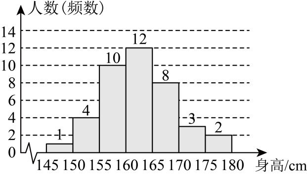
2．（24-25七年级上·陕西宝鸡·期末）下列选项中，属于定量数据的是（ ）
A．某校所有教师的学历 B．某班学生的上学交通方式
C．某小区居民的垃圾分类情况 D．花生中蛋白质的含量
3．（24-25七年级上·山东青岛·期末）下列说法正确的是（ ）
A．全班同学的上学交通方式是定量数据
B．某池塘中现有鱼的数量是定性数据
C．全班同学家养宠物的种类是定量数据
D．某公司职工的学历是定性数据
4．下面哪些数据是定量数据，哪些数据是定性数据？
(1)“神舟十七号”载人飞船各零部件质量情况；
(2)某品牌手机电池待机时长；
(3)某电视台春节联欢晚会的收视率；
(4)某班每一位同学的体育成绩（等级）．
【考点61 普查与抽样调查】
1．（25-26九年级上·重庆潼南·月考）下列调查中，适合采用全面调查（普查）方式的是（ ）
A．对我市中学生观看电影《南京照相馆》情况的调查
B．调查琼江河的水质情况
C．调查某班学生视力情况
D．调查全国初一中学生的平均身高
2．（25-26八年级上·全国·课后作业）下列调查中，最适合采用抽样调查的是（ ）
A．了解我校七年级（1）班全体同学周末时间安排情况
B．乘坐飞机时对旅客行李的检查
C．调查某班50名同学的视力情况
D．了解一批汽车的抗撞击能力
3．木王森林公园位于商洛市镇安县境内，是秦岭南坡仅有的两个国家森林公园之一，被誉为“植物的世界，动物的王国”．为调查园内的水质情况，管理人员适合采用 调查．（填“全面”或“抽样”）
4．（24-25七年级下·黑龙江佳木斯·期末）下列调查：①调查洗衣机的使用寿命；②调查“神舟十四号载人飞船”的零部件；③调查人们保护地球环境的意识；④调查全国初中生的视力情况．其中适合全面调查的是（填序号） ．
【考点62 总体、个体、样本、样本容量】
1．（24-25七年级上·甘肃兰州·期末）为了了解我县参加中考的3000名学生的体重情况，随机抽取了其中200名学生的体重进行统计分析，下面叙述正确的有（ ）个
①总体是3000名学生；
②样本是200名学生的体重；
③样本容量是200；
④以上是抽样调查．
A．1个 B．2个 C．3个 D．4个
2．为了解全校九年级300名学生的视力情况，从中抽取50名九年级学生进行视力测量调查，在这个调查中，样本容量是 ．
3．（24-25七年级下·重庆荣昌·期末）为了掌握我校七年级男同学身高情况，从中抽测了50名男同学的身高，这个问题中的样本是 ．
4．为了解我市中学生中15岁女生的身高状况，随机抽查了10个学校的200名15岁女生的身高，则下列表述正确的是
A．总体指我市全体15岁的女中学生 B．个体是200名女生的身高
C．个体是10个学校的女生 D．抽查的200名女生的身高是总体的一个样本
【考点63 统计表】
1．（2024·内蒙古赤峰·中考真题）某市为了解初中学生的视力情况，随机抽取200名初中学生进行调查，整理样本数据如下表．根据抽样调查结果，估计该市16000名初中学生中，视力不低于4.8的人数是（ ）
视力 | 4.7以下 | 4.7 | 4.8 | 4.9 | 4.9以上 |
人数 | 39 | 41 | 33 | 40 | 47 |
A．120 B．200 C．6960 D．9600
2．为了解学生心理健康情况，某学校在全校七、八、九三个年级共1000名学生中开展心理健康知识竞赛活动，根据竞赛成绩将各年级合格人数绘制了如图所示的统计表，则下列说法正确的是（ ）
各年级合格人数统计表
年级 | 七年级 | 八年级 | 九年级 |
合格人数（人） | 337 | 330 | 322 |
A．七年级学生的合格率最高
B．九年级学生的合格人数最少
C．八年级学生的人数为330人
D．九年级学生的合格率为32.2%
3．（24-25七年级上·四川成都·期末）下面是A，B两球从不同高度自由下落到地面后反弹高度的统计表．小明想要购买弹性较大的球，他应该选择 球．
起始高度/cm | 24 | 32 | 45 | 67 | 78 | 96 |
A球反弹高度/cm | 11 | 21 | 31 | 48 | 53 | 58 |
B球反弹高度/cm | 16 | 26 | 40 | 57 | 64 | 70 |
4．（24-25八年级下·河北保定·期末）在曲阳县2025年中学生运动会跳高比赛中，各年龄组的参赛人数情况如下表所示：若小明所在年龄组的参赛人数占全体参赛人数的38%，则小明所在的年龄组是
年龄组 | 13岁 | 14岁 | 15岁 | 16岁 |
参赛人数 | 5 | 19 | 12 | 14 |
【考点64 条形统计图】
1．（24-25六年级上·山东泰安·期末）学校期中考试后，随机抽取部分同学测试的成绩为样本（成绩为整数），绘制的成绩统计图如图所示，若这次测试成绩80分以上（不含80分）为优秀，则优秀率为 %．
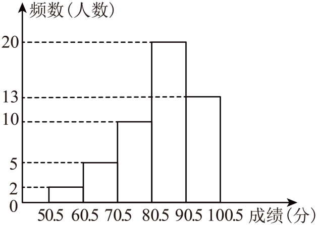
2．某校随机调查了若干名家长与中学生对中学生带手机进校园的态度，并绘制了如图所示的统计图，已知调查家长的人数与调查学生的人数相等，则家长反对学生带手机进校园的人数有（ ）
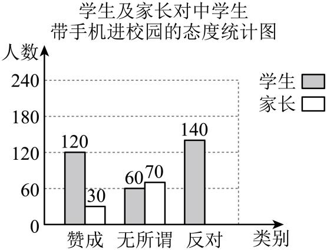
A．140 B．120 C．220 D．100
3．（24-25六年级下·上海青浦·期末）2024届巴黎奥运会落下帷幕，中国健儿斩获了境外奥运会的最好成绩．获奖情况如图所示，获得的金牌数占总奖牌数的 （填百分之几，百分号前保留一位小数）．

4．某次考试中，某班级的数学成绩被绘制成了如图所示的频数分布直方图．下列说法错误的是（ ）
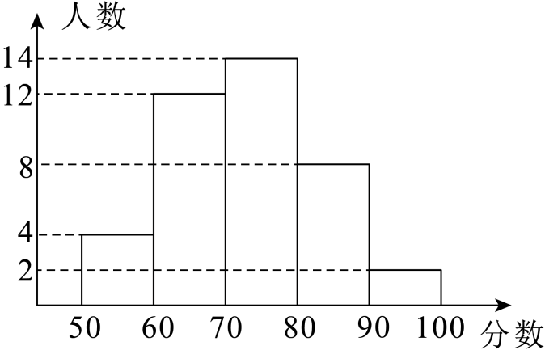
A．得分在70～80分之间的人数最多
B．及格（不低于60分）的人数为26
C．得分在90～100分之间的人数占总人数的5%
D．该班的总人数为40
【考点65 扇形统计图】
1．某班学生最喜欢的一项球类运动的统计表和扇形统计图如图所示，其中统计表不小心被撕掉一部分，下列推断不正确的是（ ）
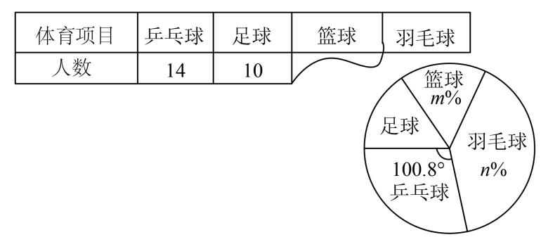
A．足球所在扇形的圆心角度数为72°
B．该班喜欢乒乓球的人数占总人数的28%
C．m与n的和为52
D．该班喜欢羽毛球的人数不超过13人
2．（24-25七年级下·辽宁大连·期末）某学校全体学生来自A、B、C三个街道，其人数比为1：2：2．如图用扇形统计图来表示来自三个街道的学生所占的百分比，则来自A街道对应扇形的圆心角度数为 °
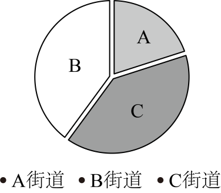
3．幸福街道组织45岁以上居民进行慢性病筛查，根据筛查所得数据绘制的扇形统计图如图所示，其中患高血脂的有171人，该区45岁以上参加这次慢性病筛查的人中，患高血压的比患高血脂的多 人．
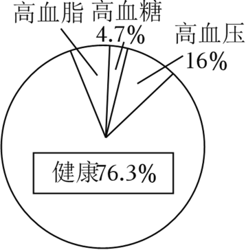
4．某学校开设多门课外活动，为了解学生参与情况，进行了随机抽查．现将数据收集并整理后，绘制出如下不完整的统计图．经调查发现，选择面塑和中国结的学生人数相同，共40人，以下结论错误的是（ ）

A．a=20
B．样本容量为100
C．选择中国结所对应的扇形圆心角为72°
D．选择面塑的学生比选择3D打印的学生数少10人
【考点66 折线统计图】
1．某购物中心对今年7-12月份中顾客使用“支付宝支付”和“微信支付”这两种支付方式的情况进行统计，得到如图所示的折线统计图．根据统计图中的信息，得出以下四个推断，其中说法不合理的是（ ）

A．6个月中11月份使用手机支付的总次数最多
B．6个月中使用“微信支付”的总次数比使用“支付宝支付”的总次数多
C．6个月中使用“微信支付”的消费总额比使用“支付宝支付”的消费总额大
D．9月份平均每天使用手机支付的次数为0.314万次
2．（24-25七年级下·河北邯郸·期末）如图是某地某日14:00至22:00的气温变化趋势图，由此可估计当天24:00时的气温约为 °C．

3．（24-25八年级下·河北唐山·期末）如图是某班学生一周参加体育锻炼情况的折线统计图，则一周参加体育锻炼时间中人数最多的锻炼时间是 小时．
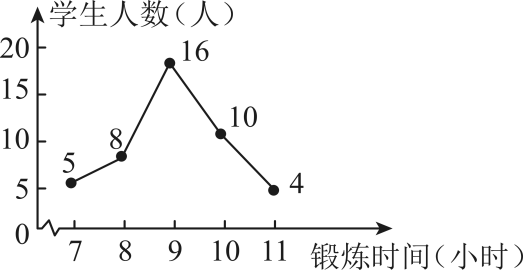
4．（24-25七年级下·甘肃定西·期末）甲、乙两家汽车销售公司2022年到2024年的销售量分别如图：从2022年到2024年的变化趋势可以得出，这两家公司销售量增长较快的是 公司．

【考点67 频数直方图】
1．新冠肺炎在我国得到有效控制后，各校相继开学．为了检测学生在家学习情况，在开学初，我校进行了一次数学测试，如图是某班数学成绩的频数分布直方图，则由图可知，得分在70分以上(包括70分)的人数占总人数的百分比为 ．

2．校运会前夕，校医对某班所有参加比赛的运动员进行了体检，这些运动员的身高（精确到1cm）数据的频数分布直方图如图所示，据图可知下列说法正确的是（ ）

A．参加比赛运动员人数为18人 B．参加比赛运动员身高最高段有8人
C．参加比赛运动员人数最多段有2人 D．参加比赛运动员身高最高段有2人
3．（24-25七年级下·重庆巫山·期末）小明调查了全校同学近视度数的情况，他可以使用（ ）来表示情况．
A．条形统计图 B．折线统计图 C．频数分布直方图 D．扇形统计图
4．（24-25七年级下·山西大同·期末）为了解800m赛跑后学生心率的分布情况，体育委员统计了全班50名学生800m赛跑后一分钟的脉搏次数，并根据收集到的数据画出如图所示的频数分布直方图．由于不小心，有一个长方形被墨水盖住了．根据统计图可知，下列说法中正确的是（ ）
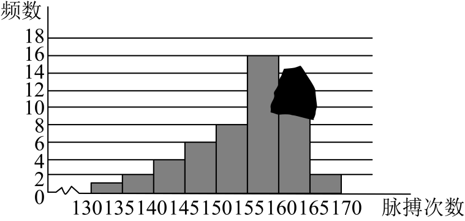
A．脉搏次数在160~165之间的人数是11人
B．脉搏次数在155~160之间的人数占全班总人数的16%
C．脉搏次数在165~170之间的人数最少
D．脉搏次数在130~150之间的人数有20人